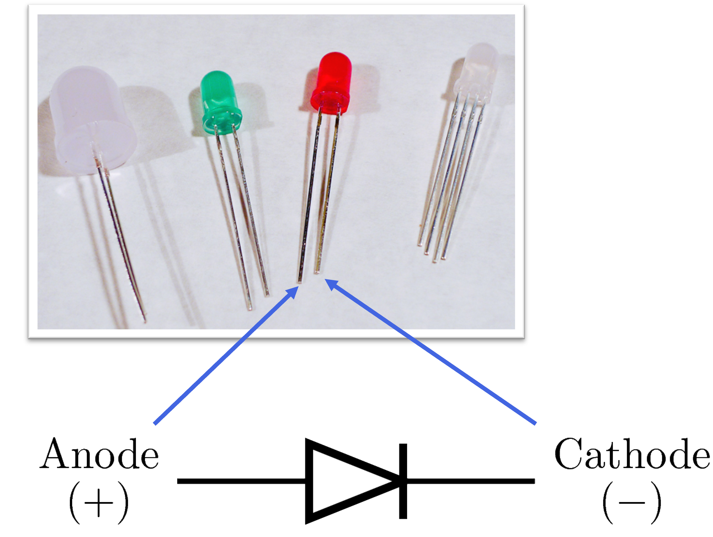
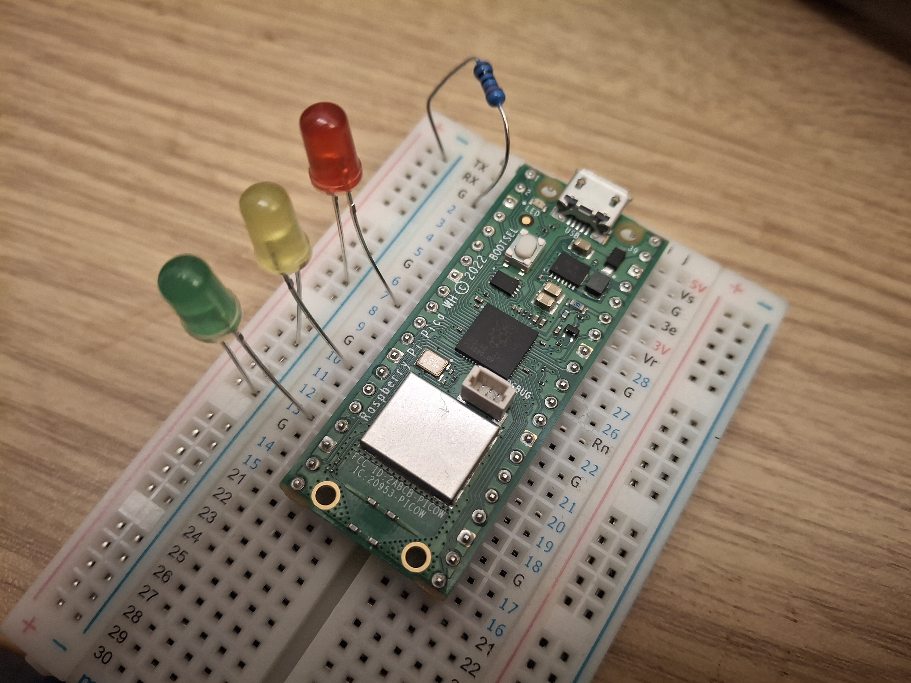
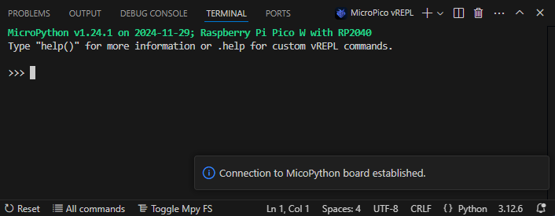
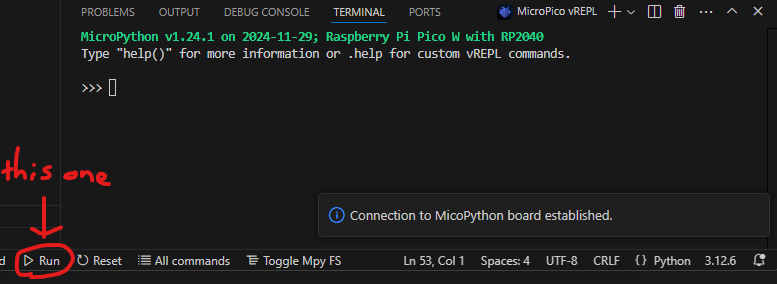
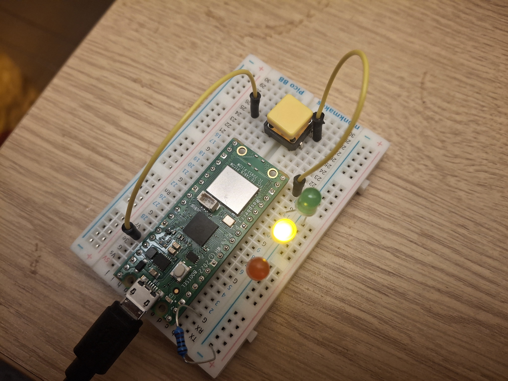

Traffic Light Simulator
We're going to wire up a circuit on a breadboard, then write MicroPython code to control LEDs just like a real traffic light.
Your Goal
A lot of Computing is about programming computers to get them to do things in the 'software' world, but we also need to program systems to do stuff in the real world that takes input from sensors and performs actions (like a thermostat turning on the heating when the temperature is too low, or a smoke alarm making a noise when it detects...well, smoke)
No previous experience with electronics or Python is needed — every step is explained from scratch.
Here's what you'll need (all of which should be in your box!)
Understand the breadboard
A breadboard lets you build circuits without soldering. The holes are connected in rows — components placed in the same row are electrically joined. The long rails down each side (marked + and −) run the full length of the board and are used for power and ground.

Understand LEDs
An LED (Light Emitting Diode) only allows current to flow in one direction. It has two legs: the longer leg is the anode (+) and must connect toward the positive supply (a GPIO pin), and the shorter leg is the cathode (−) and must connect toward ground (GND).
If an LED doesn't light up, try flipping it around — it's probably in the wrong way.

Wire up the circuit
Wire up the circuit like so (I've taken a picture of my circuit for reference):
- 1.Plug the long leg of the red LED into Pin 7 and the short leg into one of the power rails
- 2.Plug the long leg of the yellow LED into Pin 10 and the short leg into the same power rail
- 3.Plug the long leg of the green LED into Pin 13 and the short leg into the same power rail
- 4.Plug one end of the resistor into the power rail, and the other end into one of the G pins

Set up VS Code
Visual Studio Code (VS Code) is the code editor you'll use to write and run your program on the Pico. Follow these steps to get connected.
- 1.Plug the Pico into your computer using the micro USB cable.
- 2.VS Code is already open for you. When you plug it in, you should see a nice confirmation message like this:
- 3.To run a quick test, type
print("Hello!")into the code editor and press the 'Run' button at the bottom (not the one up top). If you see the message printed back, everything is working.


Test your LEDs
Before writing the full program, let's test each LED individually. In the code editor, type or copypaste the code below, and click the Run button. All being well, each LED should turn on briefly then off.
# Test all three LEDs one by one from machine import Pin from time import sleep # Set up each LED pin as an output red = Pin(7, Pin.OUT) yellow = Pin(10, Pin.OUT) green = Pin(13, Pin.OUT) # Test red red.on() # turn on sleep(1) red.off() # turn off # Test yellow yellow.on() sleep(1) yellow.off() # Test green green.on() sleep(1) green.off() print("LED test complete!")
Write the traffic light program
Now for the main event. A UK traffic light follows this sequence: Green → Yellow → Red → Red+Yellow → Green.
You've seen from the code above how to turn an LED on/off, and how to pause for a bit (using the sleep() function), so you should be able to work this out for yourself! Notice in
the code below that there is now a function called all_off which, as the name suggests, turns all the LEDs off! You can run this function by writing all_off()
If you get stuck, the solution is hidden below
SPOILER ALERT
# GREEN — go!
all_off()
green.on()
sleep(3)
# YELLOW — get ready to stop
all_off()
yellow.on()
sleep(1)
# RED — stop!
all_off()
red.on()
sleep(3)
# RED + YELLOW — get ready to go
yellow.on()
sleep(1)
# Traffic Light Simulator — Raspberry Pi Pico # Controls red, yellow and green LEDs on GP15, GP14, GP13 from machine import Pin from time import sleep # --- Setup --- red = Pin(7, Pin.OUT) yellow = Pin(10, Pin.OUT) green = Pin(13, Pin.OUT) def all_off(): """Turn all LEDs off.""" red.off() yellow.off() green.off() # --- Main loop --- print("Traffic light running... press Stop to end.") # "While True" means "do this stuff forever or until we manually stop it" while True: # GREEN — go! Code for green light only (for 5-6 seconds) # YELLOW — get ready to stop Code for yellow light only (maybe 1-2 seconds) # RED — stop! Code for red light only (3-4 seconds) # RED + YELLOW — get ready to go Code for red and yellow light together (1-2 seconds)
while True: loop runs forever. To stop it, click the Stop button (in case that wasn't obvious)
Pedestrian crossing
If you've done that, let's try and get the button involved! This is going to simulate a pedestrian crossing: when the pedestrian presses the button, it triggers a red light.
Here are the steps to get the button wired up:
- 1.Place the button on the breadboard so that it bridges the centre gap
- 2.Wire one corner to a 3V pin on the Raspberry Pi
- 3.Wire the opposite corner to Pin 15
Below is a picture of my wiring

How the code works differently
The original program uses sleep(), which completely pauses the code; it can't detect a button press while it's waiting. To fix this, the 'sleep' phase is replaced with a short
polling loop that checks the state of the button every 100 ms. If the button is pressed, the loop ends early and triggers the red phase.
Create a new file, type (or copy) the code below, and save it as pedestrian.py on the Pico. Click Run, then try pressing the button while the green light is on.
# Pedestrian Crossing — Raspberry Pi Pico # Button on GP15 triggers a red phase during green from machine import Pin from time import sleep # --- Setup --- red = Pin(7, Pin.OUT) yellow = Pin(10, Pin.OUT) green = Pin(13, Pin.OUT) button = Pin(15, Pin.IN, Pin.PULL_DOWN) # reads 0 normally, 1 when pressed def all_off(): """Turn all LEDs off.""" red.off() yellow.off() green.off() def wait_or_press(seconds): """Wait, but return True early if the button is pressed.""" for _ in range(seconds * 10): # loop once per 100ms if button.value() == 1: # button pressed return True sleep(0.1) return False def go_red(): """Run yellow then red, then pause for pedestrians.""" all_off() yellow.on() sleep(1) all_off() red.on() sleep(4) # time for pedestrians to cross # --- Main loop --- print("Running — press button for pedestrian crossing.") while True: # GREEN — watch for button press all_off() green.on() pressed = wait_or_press(10) # green lasts up to 10 seconds if pressed: sleep(2) # short delay before changing go_red() # red phase (automatic or triggered) # RED + YELLOW — get ready to go yellow.on() sleep(1)